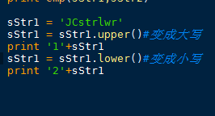

1.index描述
Python index() 方法检测字符串中是否包含子字符串 str ，如果指定 beg（开始） 和 end（结束） 范围，则检查是否包含在指定范围内，该方法与 python find()方法一样，只不过如果str不在 string中会报一个异常。
2.find描述
Python find() 方法检测字符串中是否包含子字符串 str ，如果指定 beg（开始） 和 end（结束） 范围，则检查是否包含在指定范围内，如果包含子字符串返回子字符串开始的索引值，否则返回-1。
str.index/find(str, beg=0, end=len(string))
cmp(x,y) 函数用于比较2个对象，如果 x < y 返回 -1, 如果 x == y 返回 0, 如果 x > y 返回 1。
Python 3.X 的版本中已经没有 cmp 函数，如果你需要实现比较功能，需要引入 operator 模块，适合任何对象，包含的方法有：
operator.lt(a, b)operator.le(a, b)operator.eq(a, b)operator.ne(a, b)operator.ge(a, b)operator.gt(a, b)operator.__lt__(a, b)operator.__le__(a, b)operator.__eq__(a, b)operator.__ne__(a, b)operator.__ge__(a, b)operator.__gt__(a, b
- operator.lt(a, b) #等价于a<b
- operator.le(a, b) #等价于a<=b
- operator.eq(a, b) #等价于a==b
- operator.ne(a, b) <span style="font-family: Arial, Helvetica, sans-serif;">#等价于a!=b</span>
- operator.ge(a, b)<span style="white-space:pre"> </span> #等价于a>=b
- operator.gt(a, b)<span style="white-space:pre"> </span> #等价于a>b
- operator.__lt__(a, b)
- operator.__le__(a, b)
- operator.__eq__(a, b)
- operator.__ne__(a, b)
- operator.__ge__(a, b)
- operator.__gt__(a, b)
>>> import operator
>>> operator.eq('hello', 'name');
False
>>> operator.eq('hello', 'hello');
True


Python join() 方法用于将序列中的元素以指定的字符连接生成一个新的字符串。
delimiter = ','
mylist = ['Brazil', 'Russia', 'India', 'China']
mylist = ['Brazil', 'Russia', 'India', 'China']
print delimiter.join(mylist)
基本用法：对象.replace(rgExp,replaceText,max)
其中，rgExp和replaceText是必须要有的，max是可选的参数，可以不加。
rgExp是指正则表达式模式或可用标志的正则表达式对象，也可以是 String 对象或文字；replaceText是一个String 对象或字符串文字；max是一个数字。对于一个对象，在对象的每个rgExp都替换成replaceText，从左到右最多max次。
- 0 关注
- 5 收藏，52.2k 浏览
如题，有下列字符串：
user = "{'name' : 'jim', 'sex' : 'male', 'age': 18}"
如何将字符串转化成字典dict类型？


4个回答
5已采纳
用eval()或exec()函数实现：
>>> user
"{'name' : 'jim', 'sex' : 'male', 'age': 18}">>> b=eval(user)
>>> b
{'age': 18, 'name': 'jim', 'sex': 'male'}
>>> exec("c="+user)
>>> c
{'age': 18, 'name': 'jim', 'sex': 'male'}
"{'name' : 'jim', 'sex' : 'male', 'age': 18}">>> b=eval(user)
>>> b
{'age': 18, 'name': 'jim', 'sex': 'male'}
>>> exec("c="+user)
>>> c
{'age': 18, 'name': 'jim', 'sex': 'male'}